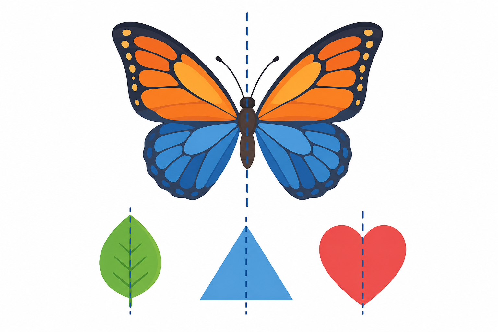

1
symetria
симетрія

📘 Co to jest? Що це?
Symetria to powtórzenie kształtu przez odbicie lub obrót — porządek i harmonia.
Симетрія — повторення форми через відбиття або обертання — порядок і гармонія.
⭐ Zapamiętaj Запам'ятай
odbicie / obrót
Шукай «дзеркало» або поворот на 180°.
⚠ Nie pomyl Не плутай
- odbicie / środekkształt „pasuje”
- przystawanie zawsze tematycznie osobnooś ≠ środek
✅ Przykłady Приклади
- lustrzane odbicie
- figura = obraz
- motyl — symetria
- oś symetrii
- złóż wzdłuż osi